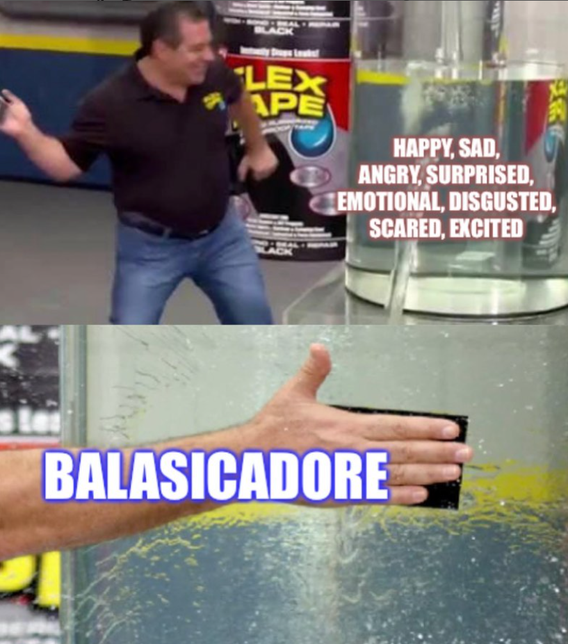

Home
Definition
Debate
Committees
Sources
So... What exactly is Balasicadore?
scroll down to view the meaning of the word!
It is a emotional expression that can represent every single human feeling!
